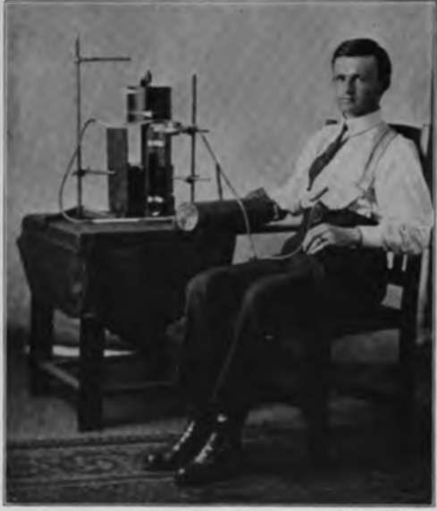
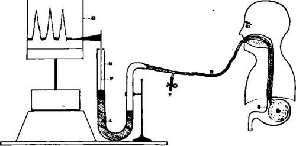

II. Movements Of The Empty Stomach In Man
Description
This section is from the book "The Control Of Hunger In Health And Disease", by Anton Julius Carlson. Also available from Amazon: The Control of Hunger in Health and Disease.
II. Movements Of The Empty Stomach In Man
The movements of the empty stomach in mammals were extensively studied by Boldyreff in dogs by means of the gastric fistula. Rubber balloons were introduced into the stomach and connected by air or water transmission to the recording manometer. According to Boldyreff the empty stomach of the dog exhibits alternating periods of complete quiescence during the first three or four days of fasting. The periods of activity vary in length from twenty to thirty minutes, and the intervening periods of rest last from i J to 2$ hours. Both the fundus and the pyloric region of the stomach are involved in the activity of the contraction period, the fundus giving 10 to 20 very vigorous contractions. Boldyreff states definitely- and the published tracings seem to support the statement-that between the period of strong rhythmical contractions the stomach is in complete rest. The period of activity begins with weak contractions, and these increase gradually in strength until the period ends abruptly with the strongest contractions. Inasmuch as the tracings published by Boldyrcff do not show the stomach respiratory pressure or the stomach pulse pressure, it would seem that the methods of registration were not delicate enough to detect feeble rhythms of contractions that might have been present during the periods of relative rest.
Fig. 3.-Photograph showing arrangements for simultaneous recording of the gastric hunger contractions and the vasomotor and cardiac changes (arm plclhys-mograph) of Mr. F. V.
Cannon and Washburn studied the movements of the empty stomach in man by introducing a balloon through the esophagus into the stomach. The observations were made 6 to 20 hours after meals. They found that the periodic activity of the empty human stomach is very similar to that in the dog, but the average duration of the periods is not given. The fundus contractions were about 30 seconds in duration, and the pause between the contractions lasted about 60 seconds. The published tracings show a gradual tonus contraction of the fundus during the pause. The observations of Cannon and Washburn were mainly directed toward establishing the relation between the contraction periods of the stomach and the sensation of hunger. They seem to agree with Boldyreff in the absolute quiescence of the stomach between the periods of strong rhythmical contractions. "Before the hunger was experienced by W. the recording apparatus revealed no sign of gastric activity." There is some indication of a feeble rhythm during the rest period in one of their published tracings.
Fig. 4.-Diagram showing method of recording gastric hunger contractions of the empty stomach of normal persons. B, rubber balloon in stomach. Dy kymograph. F, cork float with recording flag. M, manometer. L, manometer fluid (bromoform, chloroform, or water). R, rubber tube connecting balloon with manometer. 5, stomach. T, side tube for inflation of stomach balloon.
When the pressure in the balloon in the empty stomach of a normal person is properly adjusted and the manometer-recording devices made as delicate as possible, the tracings obtained form a composite of the following pressure variations in the gastric cavity:
1. Periods of powerful rhythmical contractions, alternating with periods of relative quiescence. As the duration of each individual contraction in these periods is approximately 30 seconds, we may call these contractions the "30-seconds rhythm." The entire contraction period we will designate, provisionally, as the " hunger period," and the individual contractions in the period the "hunger contractions."
2. A tonus rhythm (tonus contraction of fundus) of wonderful uniformity in rate, but fluctuating in amplitude, the rate varying from 18 to 22 seconds with an average of 20 seconds. The tonus rhythm increases in amplitude without change in rate during the periods of the powerful rhythmical contractions of the fundus, and are weakest immediately after these periods. But they are always present in the empty stomach of man, provided the subject is in good health. For the sake of brevity we may designate these contractions provisionally as " 20-seconds rhythm." The method used by Cannon and Washburn was evidently not delicate enough to detect this tonus rhythm, and hence they concluded, erroneously, that the empty stomach of man is completely quiescent between the periods of the strong hunger contractions.
3. A pulse pressure rhythm, always present.
4. A respiratory pressure rhythm, always present.
The periods of relatively powerful rhythmical contractions (30-seconds rhythm) are practically identical with the periods of "hunger contraction" of Cannon and Washburn. The individual contractions of these periods usually begin as a feeble tonus rhythm; they gradually increase in amplitude pari passu with shortening of the intervening pauses, and may or may not end in tetanus or prolonged tonus contractions, followed by a relatively abrupt relaxation and quiescence.
When the contractions are relatively feeble, the periods of activity are always short, the variation being from 6 to 20 minutes, with an average duration of 12 minutes. The number of strong contractions in these periods varies from 10 to 25, with an average of #bout 14 contractions. The duration of each individual con-, traction is approximately 20 to 25 seconds. The stronger contractions are usually in the middle of the periods, the initial and final contractions being the weakest. In no case have we seen such a period end in tetanus.
The periods of more powerful contractions exhibit some characteristic features. The periods are always initiated by weak contractions with long intervening pauses. These pauses may be of several minutes' duration. Then, the individual contractions gradually increase in amplitude, and the interveiiing pauses become shorter, until the climax is reached in a number of very powerful and rapid contractions approaching incomplete tetanus. The tetanus when present usually lasts from 2 to 5 minutes. The cessation of these periods of activity is always abrupt. In Mr. V. there were at times two or three periods of nearly complete tetanus at the end of the period. On five different days these final tetanus periods lasted for from 10 to 15 minutes. This is, however, exceptional. When the period does end in tetanus, the tetanus usually lasts only 2 to 3 minutes.
Continue to:
- prev: Chapter III. The Stomach In Hunger. I. Methods Of Investigation
- Table of Contents
- next: II. Movements Of The Empty Stomach In Man. Continued